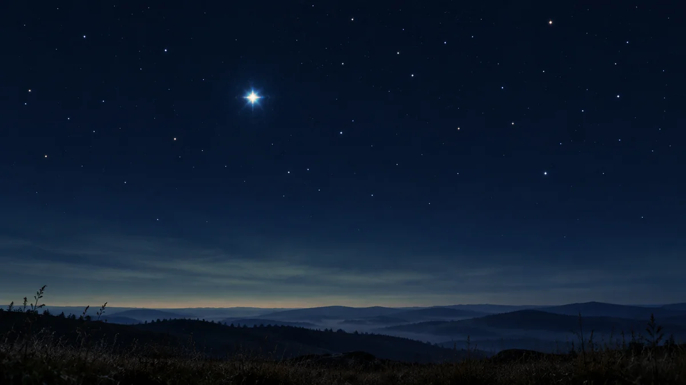

별은 왜 반짝이고 행성은 덜 반짝일까요?
밤하늘의 밝은 점이 별인지 행성인지 헷갈릴 때, 반짝임이 단서가 되는 이유를 지구 대기와 빛의 크기로 쉽게 풀어봅니다.

반짝이는 건 별 자체가 아니에요
밤하늘에서 어떤 점은 빠르게 반짝이는데, 어떤 점은 작은 전등처럼 차분하게 빛납니다. 흔히 별은 반짝이고 행성은 덜 반짝인다고 하지요. 이 차이는 밝기만의 문제가 아닙니다. 별이 스스로 불빛을 켰다 껐다 하는 것도 아니에요. 지상에서 보는 별빛은 우리 눈에 닿기 전 지구 대기를 통과하고, 계속 움직이는 공기층은 빛의 진행 방향을 조금씩 바꿉니다.
NASA는 맑은 밤에도 온도와 밀도가 다른 공기 덩어리가 움직이며 천체의 빛을 흔들고 흐리게 보이게 한다고 설명합니다. 그래서 별의 위치와 밝기, 때로는 색까지 순간순간 달라 보입니다. 우리가 보는 반짝임은 아주 먼 별보다 훨씬 가까운 지구의 공기가 만든 효과인 셈입니다.[2]
아주 먼 별빛은 점으로 도착해요
별은 실제로 태양처럼 거대한 천체지만 너무 멀리 있어서 맨눈에는 크기가 없는 한 점처럼 보입니다. 좁은 빛줄기가 대기의 작은 흔들림을 만나면 그 점 전체가 영향을 받아 반짝임이 눈에 잘 드러납니다. 망원경으로 별을 크게 확대해도 대기의 흔들림이 사라지는 것은 아니어서, 지상 관측에서는 공기의 안정도가 선명도에 중요한 조건이 됩니다.
여기서 기억할 것은 별빛 자체가 불규칙해졌다고 단정하지 않는 것입니다. 지금 눈앞에서 빠르게 일어나는 반짝임은 대부분 대기를 지나며 생긴 겉보기 변화입니다.[1] [2]
행성빛은 작은 원반에서 와요
금성·목성·화성 같은 행성은 별보다 훨씬 가까이 있습니다. 맨눈에는 점처럼 보여도 망원경에서는 작은 원반이나 초승달 같은 모양을 확인할 수 있어요. 행성은 스스로 빛나는 별이 아니라 태양빛을 받아 반사하고, 그 빛은 한 점이 아니라 아주 작지만 넓이를 가진 영역에서 우리에게 옵니다.
대기는 행성빛도 흔들지만, 원반의 여러 부분에서 온 빛이 서로 다른 영향을 받아 전체 밝기의 변화가 덜 두드러집니다. 그래서 행성은 대체로 별보다 꾸준히 빛나 보입니다. 다만 ‘덜 반짝인다’는 관측 단서이지 절대 규칙은 아니며, 반짝임만으로 천체의 이름까지 확정할 수는 없습니다.[1]
우주망원경의 별은 더 차분해요
허블 우주망원경이 대기 위에서 관측하는 이유도 여기에 있습니다. NASA에 따르면 허블은 흔들리는 공기층을 통과하지 않고 별빛을 받아 지상 망원경보다 안정적이고 선명한 영상을 얻을 수 있습니다. 우주에서 별이 덜 반짝여 보이는 것은 별이 달라져서가 아니라 관측자와 별 사이에 흔들리는 대기가 없기 때문입니다.[2]
오늘 밤에는 두 단계를 함께 써보세요
밝은 점을 발견하면 먼저 빛이 빠르게 흔들리는지 잠깐 살펴보세요. 비교적 차분하다면 행성일 가능성을 생각해볼 수 있습니다. 다음에는 ORBIT의 ‘오늘 밤 행성’에서 도시와 시각을 고르고 실제 행성의 방향과 높이를 대조해보세요. 반짝임은 첫 단서이고, 위치 확인이 두 번째 단서입니다.
구름과 건물, 주변 불빛은 실제 관측 결과를 바꿀 수 있으니 화면의 위치만 보고 보인다고 단정하지는 마세요. 오늘 기억할 한 가지는 간단합니다. 별이 반짝여 보이는 까닭은 별이 깜빡여서가 아니라, 점처럼 도착한 별빛이 움직이는 지구 대기를 지나오기 때문입니다.[1] [2]
이 이야기를 확인한 자료
- NASA Science · What's Up: June 2024 Skywatching Tips from NASA ↗자료 확인 2026.09.14 · 원문 새 탭
- NASA Science · Why Have a Telescope in Space? ↗자료 확인 2026.09.14 · 원문 새 탭
자료의 날짜와 적용 범위를 함께 확인해주세요. 오류 제보하기 →